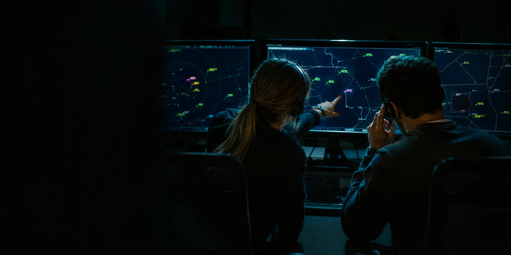
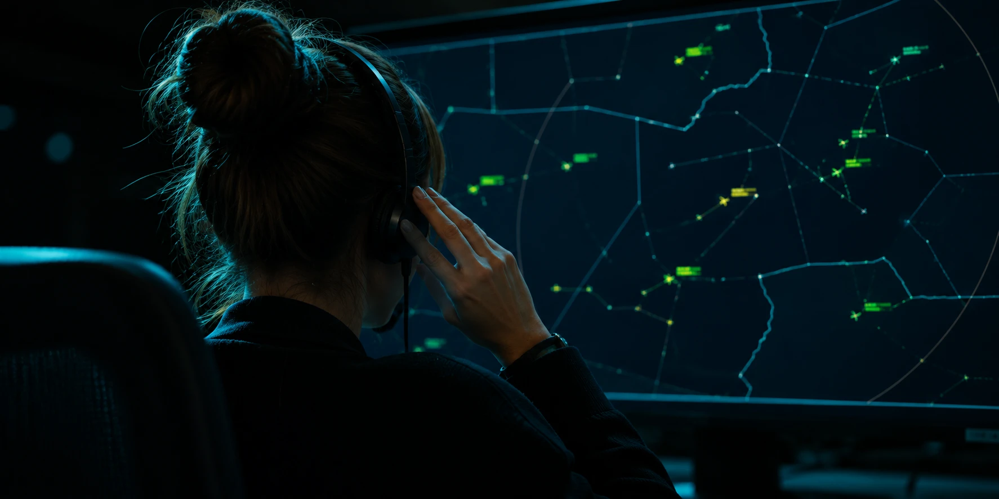
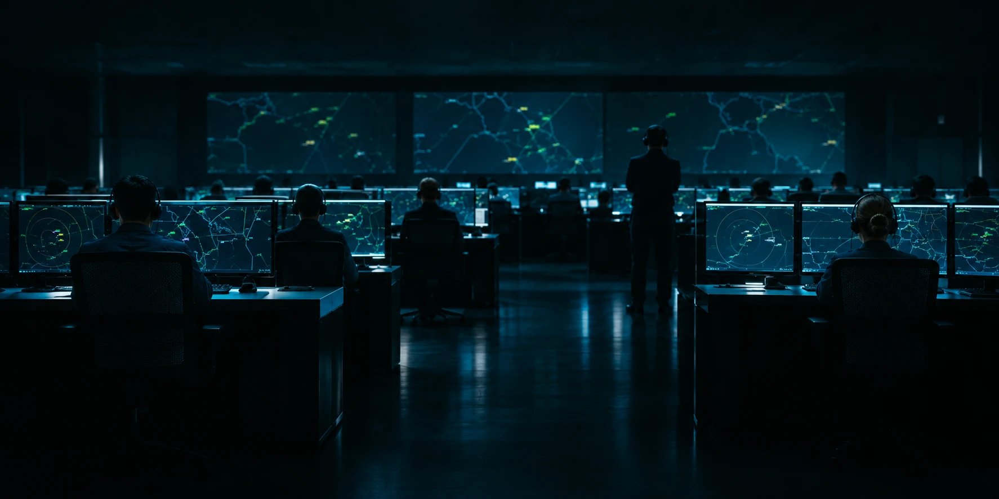

Controlla il cieloda una sala radar
Il simulatore gratuito di controllo del traffico aereo, sui settori veri di Roma e Milano.
Gratis, senza account. Si gioca da computer, con mouse o trackpad.
Ogni puntino è un volo.
Il colore del tag ti dice di chi è.
GialloDi un altro settore. Passa vicino, ma non è tuo.
MagentaTe lo stanno passando. Un clic e lo prendi.
VerdeÈ tuo. Solo a lui puoi dare istruzioni.

Cinque miglia o mille piedi. Mai meno.
Prendi i voli che entrano nel tuo settore, tienili separati, passali al settore successivo. Intanto il mondo non sta fermo.
- Settori veriRoma ACC e Milano ACC, ricostruiti su dati reali.
- Traffico veroFlussi fra aeroporti, salite e discese per ogni aereo.
- ImprevistiTemporali, zone militari, avarie radio, MAYDAY.
- DifficoltàDa cinque a dieci voli in contatto insieme.

Dieci lezioni, da zero a un turno completo.
Non è un filmato: si controlla davvero, passo per passo.
- Il radar, il settore, i colori
- Prendere, istruire, passare i voli
- Conflitti, zone attive, meteo
- Emergenze e un turno di prova

Oppure scaricalo.
Lo stesso simulatore, in una finestra sua. Funziona anche senza internet.
Al primo avvio compare un avviso di sicurezza?
È normale: il programma non è firmato con un certificato a pagamento. Su macOS apri con clic destro → Apri; su Windows scegli Ulteriori informazioni → Esegui comunque. Le istruzioni complete sono nella pagina del progetto.
Gratuito, e resterà così. Se ti diverte, offrimi un caffè.
Offrimi un caffè